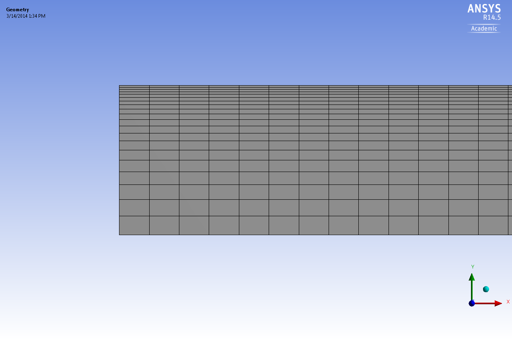
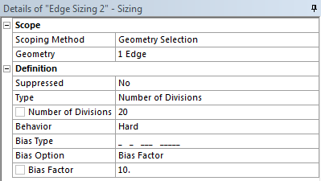
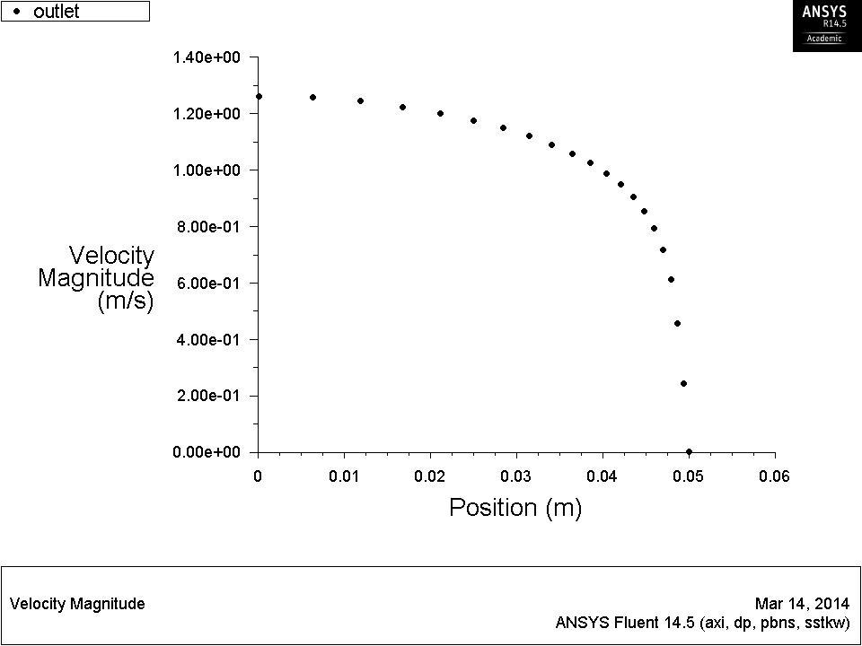
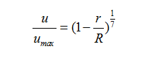
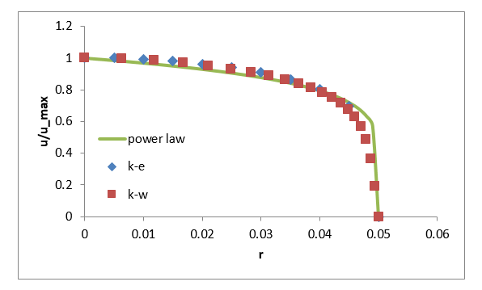

Exercise: Turbulent Flow in a Circular Pipe (Fine Mesh)¶
Mesh¶
- Now close FLUENT and go back to Workbench.
- Left click on the little triangle at the upper left corner of the project and duplicate it. An identical project will appear next to the original one. This time, we will refine the near wall mesh and apply the $k$-$ω$ model.
- Open the meshing software.
- First, we will double the number of elements along the width. In addition, we will condense the mesh near the wall.

- In the
Details of Edge Sizing, select Bias Type as shown in the picture and enter $10$ for the Bias Factor. It means the largest gird will be $10$ times the size of the smallest one.
- You will need to apply another edge sizing to the right boundary with opposite Bias Type because of the default direction of edges.

Setup¶
- Update the mesh and close it.
- Launch FLUENT with double precision.
In Models task page, change the viscous model to SST k-omega.
Notice that the wall functions have disappeared. The $k$-$ω$ models attempt to explicitly resolve the boundary layer.
Keep the rest settings as before.
Initialize from inlet and request $500$ iterations.
Post Processing¶
- Again, plot
y+ along the wall. This time, the value will fall into the viscous sublayer.
- Plot the velocity profile on the
outlet. With the refined mesh, the boundary layer was successfully captured.
- Export the data.

Although there is not an analytical solution for turbulent flow velocity profile, a number of empirical correlations exist. The power law states that

- Import the profile data of $k$-$ε$ model and $k$-$ω$ model into an excel spread sheet. Then compare their results.

|

 This content is available under a Creative Commons Attribution-NonCommercial 4.0 Unported License.
This content is available under a Creative Commons Attribution-NonCommercial 4.0 Unported License.